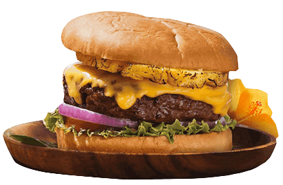
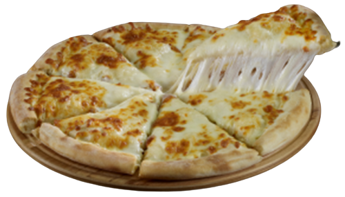
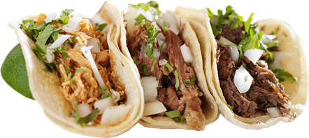
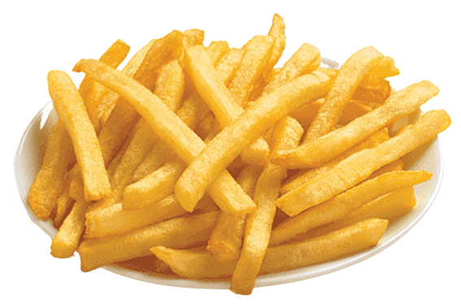
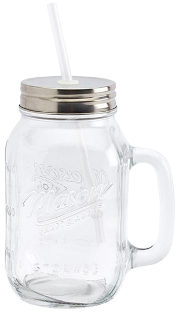
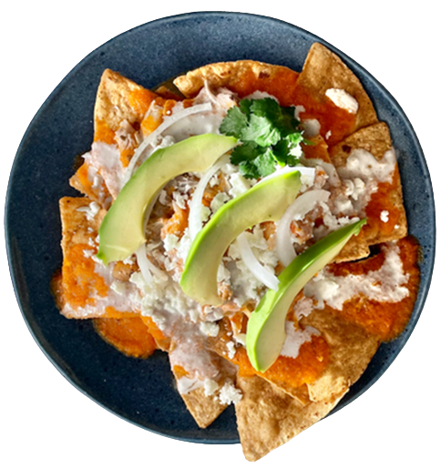
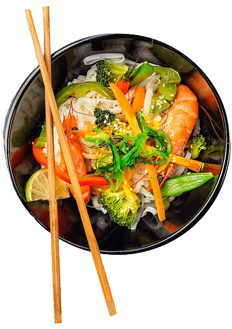
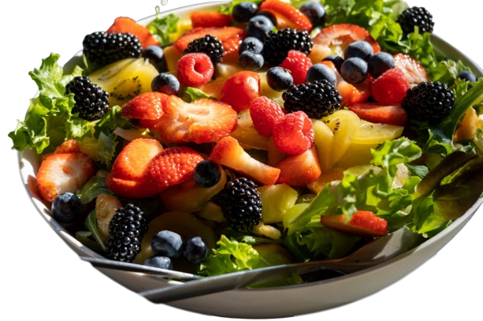
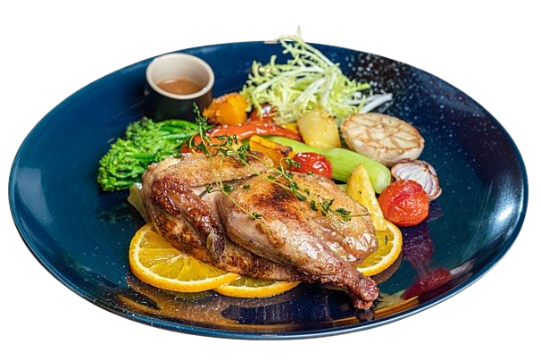
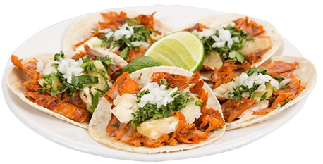

OFERTAS DEL DIA MENÚ
|  Hamburguesa Hawaiana $48
×
La hamburguesa hawaiana es un tipo de hamburguesa que lleva ingredientes típicos de la gastronomía de Hawái, como el jamón, la piña y la salsa teriyaki. |
La hamburguesa hawaiana es un tipo de hamburguesa que lleva ingredientes típicos de la gastronomía de Hawái, como el jamón, la piña y la salsa teriyaki. |  Pizza Queso $67
×
La pizza de queso es una pizza tradicional que consiste en una base de masa de pizza cubierta con salsa de tomate y queso rallado. |
La pizza de queso es una pizza tradicional que consiste en una base de masa de pizza cubierta con salsa de tomate y queso rallado. |
|  Tacos de Bistec $40
×
Los tacos de bistec son una comida popular en la cocina mexicana que consisten en pequeñas tortillas de maíz rellenas de carne de bistec asada, cebolla y cilantro. |
Los tacos de bistec son una comida popular en la cocina mexicana que consisten en pequeñas tortillas de maíz rellenas de carne de bistec asada, cebolla y cilantro. |  Orden de papas $35
×
Una orden de papas a la francesa es una porción de papas fritas cortadas en forma de bastones largos y delgados, que se fríen en aceite caliente hasta que estén crujientes y dorados. |
Una orden de papas a la francesa es una porción de papas fritas cortadas en forma de bastones largos y delgados, que se fríen en aceite caliente hasta que estén crujientes y dorados. |
|  2 Bebidas $50
×
¡Aprovecha nuestra oferta especial por tiempo limitado! Puedes obtener dos bebidas de cualquier tipo por sólo 50 pesos. Cocteles, jugos, tés, ¡lo que desees! ¡Elige tus bebidas favoritas y disfrútalas con un gran descuento! Ven y visítanos pronto para disfrutar de esta oferta y refrescarte con tus bebidas favoritas a un precio increíble. ¡No te lo pierdas! |
¡Aprovecha nuestra oferta especial por tiempo limitado! Puedes obtener dos bebidas de cualquier tipo por sólo 50 pesos. Cocteles, jugos, tés, ¡lo que desees! ¡Elige tus bebidas favoritas y disfrútalas con un gran descuento! Ven y visítanos pronto para disfrutar de esta oferta y refrescarte con tus bebidas favoritas a un precio increíble. ¡No te lo pierdas! |  Chilaquiles con Pollo $50
×
Los chilaquiles con pollo son un plato típico de la cocina mexicana que consiste en tiras de tortillas de maíz fritas y cubiertas con salsa roja o verde, trozos de pollo desmenuzado y queso rallado. |
Los chilaquiles con pollo son un plato típico de la cocina mexicana que consiste en tiras de tortillas de maíz fritas y cubiertas con salsa roja o verde, trozos de pollo desmenuzado y queso rallado. |
|  Comida China $139
×
Entre los platos chinos más populares se encuentran el arroz frito, el pollo Kung Pao, el pato laqueado, el cerdo agridulce, los dumplings y el chow mein. También se utilizan mucho los woks para saltear y cocinar al vapor, lo que da lugar a platos sabrosos y saludables. |
Entre los platos chinos más populares se encuentran el arroz frito, el pollo Kung Pao, el pato laqueado, el cerdo agridulce, los dumplings y el chow mein. También se utilizan mucho los woks para saltear y cocinar al vapor, lo que da lugar a platos sabrosos y saludables. |  3 Ensaladas Frutos Rojos$299
×
La ensalada de frutos rojos es una mezcla de frutas frescas y deliciosas, típicamente bayas como fresas, frambuesas, arándanos, moras y otras frutas rojas y moradas, cortadas en trozos pequeños y mezcladas en una ensaladera. |
La ensalada de frutos rojos es una mezcla de frutas frescas y deliciosas, típicamente bayas como fresas, frambuesas, arándanos, moras y otras frutas rojas y moradas, cortadas en trozos pequeños y mezcladas en una ensaladera. |
|  Platillo del Día $110
×
El platillo del día es una creación única y exclusiva de nuestro chef, elaborado con ingredientes frescos y de alta calidad, cuidadosamente seleccionados para brindarte una experiencia gastronómica única. |
El platillo del día es una creación única y exclusiva de nuestro chef, elaborado con ingredientes frescos y de alta calidad, cuidadosamente seleccionados para brindarte una experiencia gastronómica única. |  Tacos al Pastor $58
×
La carne se prepara marinando trozos de carne de cerdo en una mezcla de especias como chile, ajo, cebolla, orégano y jugo de piña. Luego, se coloca en un asador vertical giratorio llamado "trompo", que es similar a los que se utilizan para los kebabs. |
La carne se prepara marinando trozos de carne de cerdo en una mezcla de especias como chile, ajo, cebolla, orégano y jugo de piña. Luego, se coloca en un asador vertical giratorio llamado "trompo", que es similar a los que se utilizan para los kebabs. |